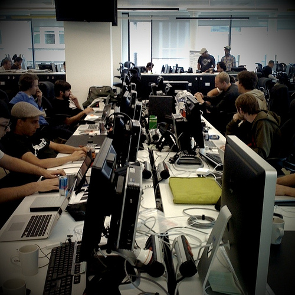

What's this all about???
What is this all about?
You've probably heard terms like...
- Web of Data
- Semantic Web
- Linked Data
There are subtle differences...
but basically these are just different names for the same meme
actually most people involved seem to prefer the term Linked Data
Put simply...
a simple example
Bill Evans - Jazz pianist

Everything gets a URI:
the musical genre modal jazz has the URI:
<http://dbpedia.org/resource/Modal_jazz>
and the music artist Bill Evans has the URI:
<http://dbpedia.org/resource/Bill_Evans>
and the property has genre has the URI:
<http://dbpedia.org/ontology/genre>
For example:
We can use RDF to say "Bill Evans' musical genre is modal jazz"
<http://dbpedia.org/resource/Bill_Evans>
<http://dbpedia.org/ontology/genre>
<http://dbpedia.org/resource/Modal_jazz> .
So what's possible?
Music hack day, London
The MusicBore the grand-prize-winning hack used the Web of Linked Data!
Watch the screencast (warning: lots of IRC geekery)
and now...